Business Intelligence
Online Analytical Processing (OLAP)
Gliederung der Vorlesung Business Intelligence
- Business Intelligence: Einführung und Motivation
- Reporting
- Online Analytical Processing (OLAP)
- Dashboards (Datenvisualisierung)
- BI in der Cloud
- Corporate Performance Management
Gliederung
Online Analytical Processing (OLAP)
- OLAP - Einführung
- OLAP - Definition
- OLAP - Betriebswirtschaftliche Einsatzbereiche
- Regeln und Kriterien für OLAP Systeme - Codd
- OLAP - Navigation
- OLAP - Frontend
- Speicherung multidimensionaler Daten - MOLAP
- Speicherung multidimensionaler Daten - ROLAP
- OLAP Server
- SSAS
Einordnung
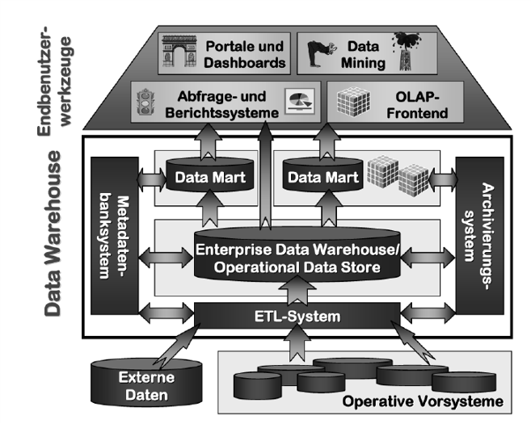
Gluchowski, P., Gabriel, R., & Dittmar, C. (2008). Management Support Systeme und Business Intelligence: Computergestützte Informationssysteme für Fach- und Führungskräfte. Berlin: Springer
OLAP - Einführung
- Multidimensionale Perspektiven auf verfügbare quantitative Datenbestände haben sich als geeignet erwiesen, um den Mitarbeitern einen flexiblen und intuitiven Zugang zu den benötigten Informationen zu eröffnen.
- Multidimensionalität als zentrales Gestaltungsparadigma:
- Betriebswirtschaftlich relevantes Zahlenmaterial simultan entlang unterschiedlicher Klassen logisch zusammengehöriger Informationsobjekte aufgliedern.
- Korrespondiert mit der naturgemäß mehrdimensionalen Problemsicht der Unternehmungsanalytiker.
OLAP - Einführung
- Betriebswirtschaftliche Kenngrößen (= Fakten)
- Umsatz
- Dimensionen
- Kunden, Artikel, Regionen
- hierarchische Beziehungen (Navigationspfade, Verdichtungspfade)
- Slowly Changing Dimensions
- Dimensionen entlang derer sich betriebswirtschaftliche Kenngrößen im Zeitablauf untersuchen lassen.
- Umsätze pro Monat in den verschiedenen Regionen und Produktgruppen
OLAP - Definition
- Software-Technologie, die Managern wie auch qualifizierten Mitarbeitern aus den Fachabteilungen
- schnelle, interaktive und vielfältige Zugriffe auf relevante und konsistente Informationen ermöglichen soll.
- Im Vordergrund stehen dabei dynamische und multidimensionale Analysen auf historischen, konsolidierten Datenbeständen.
Gluchowski, P., Gabriel, R., & Dittmar, C. (2008). Management Support Systeme und Business Intelligence: Computergestützte Informationssysteme für Fach- und Führungskräfte. Berlin: Springer
OLAP - Einführung
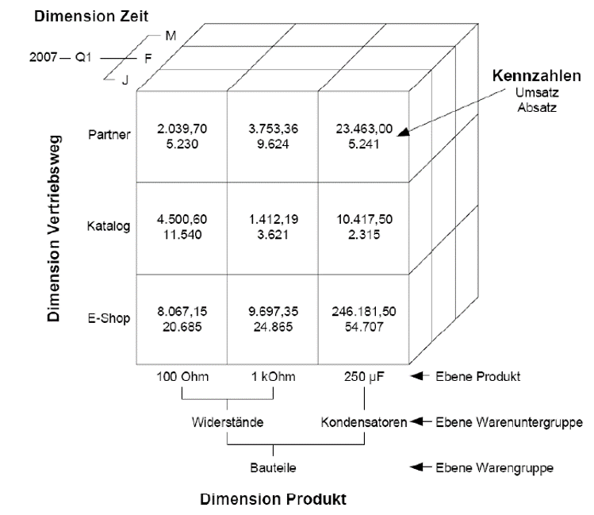
Einführung in die multidimensionale Datenmodellierung mit ADAPT Christian Kurze BI-Praktikum IBM – WS 2008/09. TU Chemnitz
OLAP - Betriebswirtschaftliche Einsatzbereiche
Einsatz multidimensionaler Systeme nach Funktionsbereichen
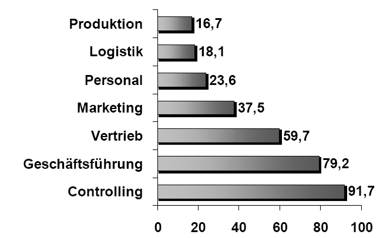
Gluchowski, P., Gabriel, R., & Dittmar, C. (2008). Management Support Systeme und Business Intelligence: Computergestützte Informationssysteme für Fach- und Führungskräfte. Berlin: Springer
OLAP - Betriebswirtschaftliche Einsatzberiche
Vertriebscontrolling:Klassischer Einsatzbereich
- Analyse von Erlösen und Absatzmengen
- Zeit-, Kunden- und Artikeldimensionen
- Vergleiche Ist-Zahlen vs. Planzahlen
- Aufdecken von Abweichungsursachen
- Integration externer demografische und makroökonomische Daten
- 80/20-Analysen
Regeln und Kriterien für OLAP Systeme - Codd
"Providing OLAP to User-Analysts: An IT Mandate"
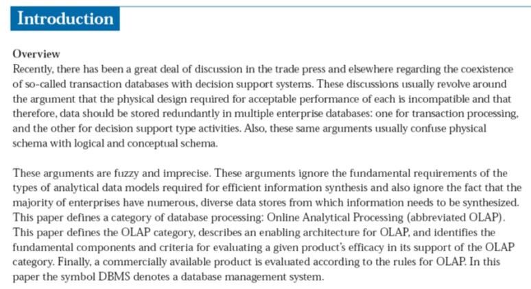
Codd, Edgar F.; Codd, Sally B.; Salley, Clynch T. (1993): Providing OLAP (On-Line Analytical Processing) to User-Analysts: An IT-Mandate, White Paper, o. O. 1993
Regeln und Kriterien für OLAP Systeme - Codd
- Multidimensionale Denkweise (Kernanforderungen):
- Mehrdimensionale konzeptionelle Perspektiven
- Grundprinzipien der gleichgestellten Dimensionen
- Unbeschränkte kreuzdimensionale Operationen über Dimensionen hinweg
- Unbegrenzte Dimensions- und Aggregationsstufen
- Zweck: Schnelle Ad-Hoc-Analysen (Kernanforderung):
- Stabile Antwortzeiten bei der Berichterstattung
- Technische Anforderungen:
- Transparenz
- Zugriffsmöglichkeit
- Mehrbenutzerfähigkeit
- Implementierungshinweise:
- Client/Server Architektur
- Dynamische Verwaltung „dünn besetzter“ Matrizen
- Sonstige Anforderungen:
- Intuitive Datenmanipulation
- Flexibles Berichtswesen
OLAP - Navigation
Würfeldarstellung mehrdimensional strukturierter Daten
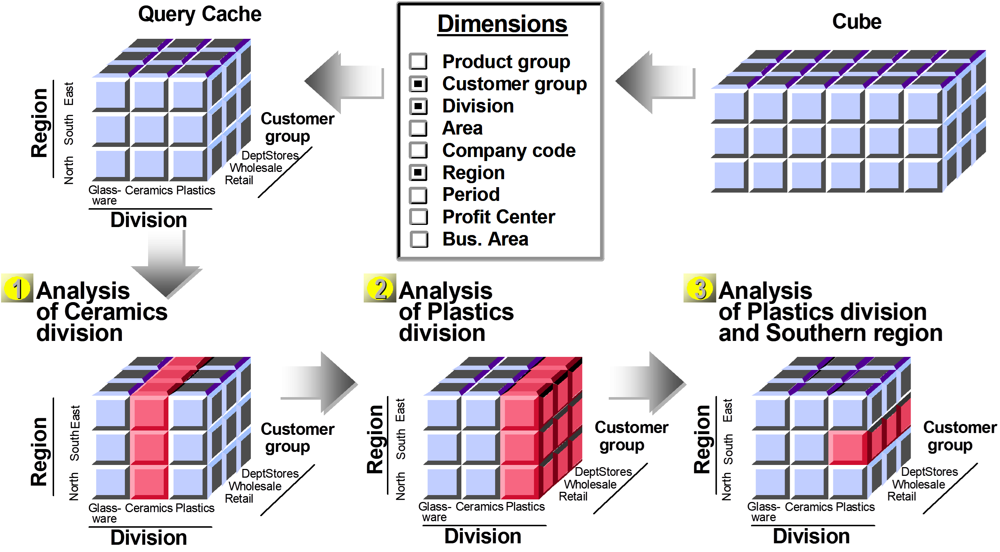
OLAP - Navigation
Präsentation und Navigation
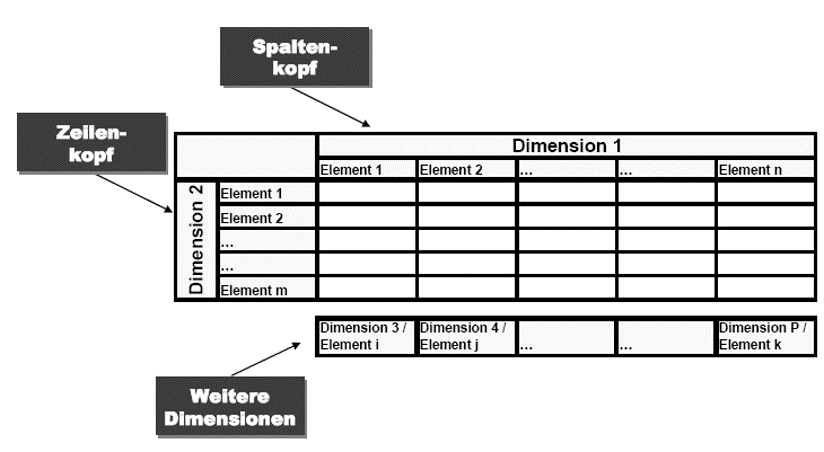
OLAP - Navigation
Präsentation und Navigation - Rotation des Datenwürfels
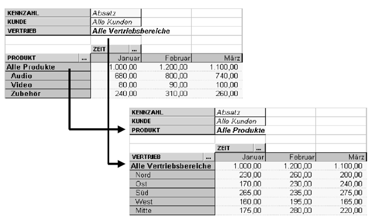
OLAP - Navigation
Präsentation und Navigation - Rotation des Datenwürfels
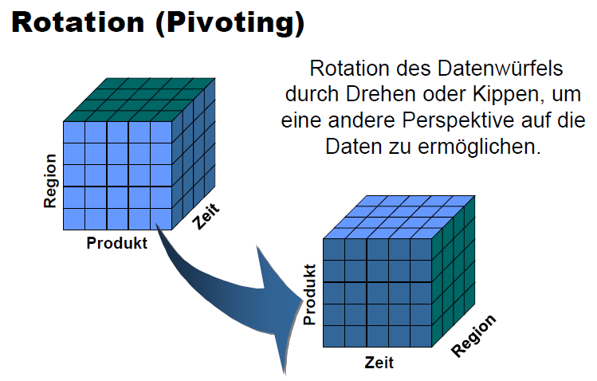
OLAP - Navigation
Präsentation und Navigation - Drill Down
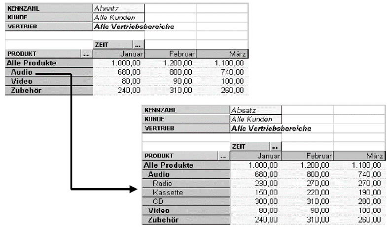
OLAP - Navigation
Präsentation und Navigation - Drill Across
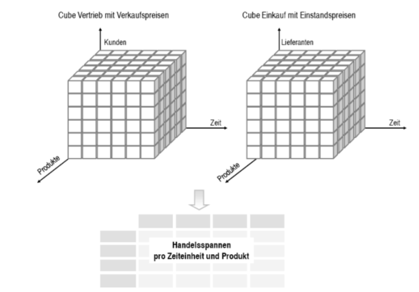
Aus: Kemper, Baars, Mehanna. Business Intelligence - Grundlagen und praktische Anwendungen. Vieweg. 2010
OLAP - Frontend
Cognos Powerplay

OLAP - Frontend
Cognos Powerplay

OLAP - Frontend
Microsoft PowerBI

OLAP - Frontend
Erweiterungen handelsüblicher Standardsoftwarepakete: Beispiel Palo

OLAP - Frontend
Pivot Tabellen

Quelle: Vorlesung Datenanalyse - Prof. Dr. Gluchowski - TU Chemnitz
OLAP - Frontend
Web Browser
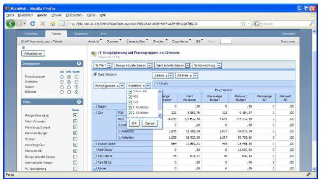
Quelle: Vorlesung Datenanalyse - Prof. Dr. Gluchowski - TU Chemnitz
Speicherung multidimensionaler Daten
Speicherung (logisch) multidimensionaler Daten
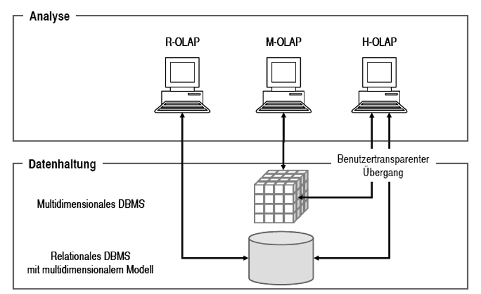
Aus: Kemper, Baars, Mehanna. Business Intelligence - Grundlagen und praktische Anwendungen. Vieweg. 2010
Speicherung multidimensionaler Daten
Speicherung (logisch) multidimensionaler Daten - SSAS
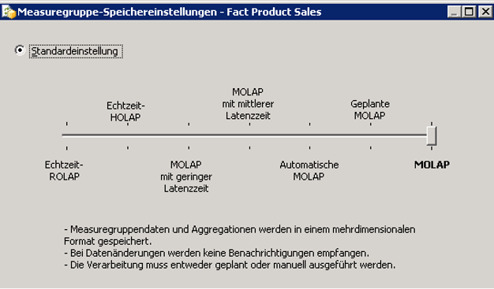